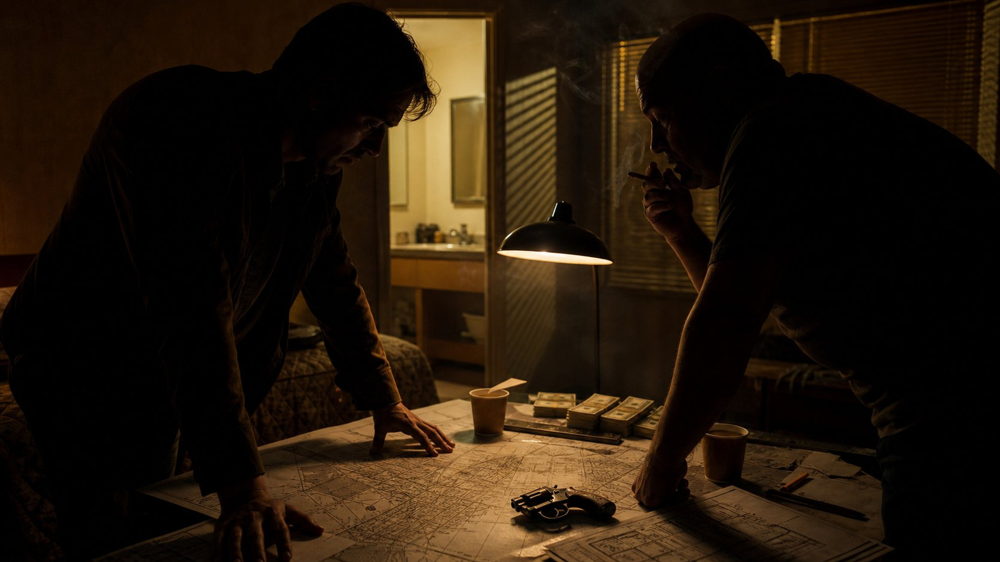
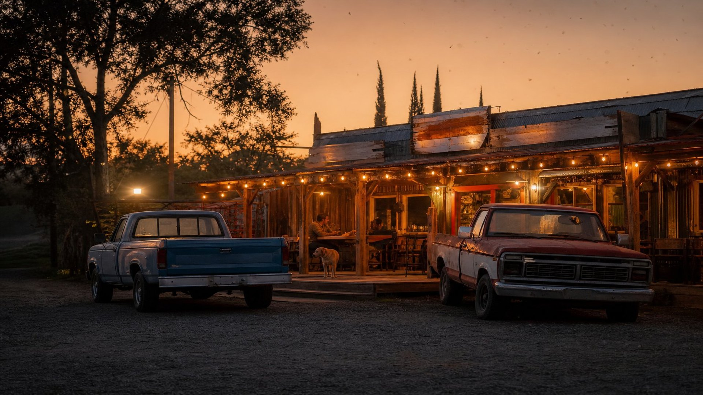
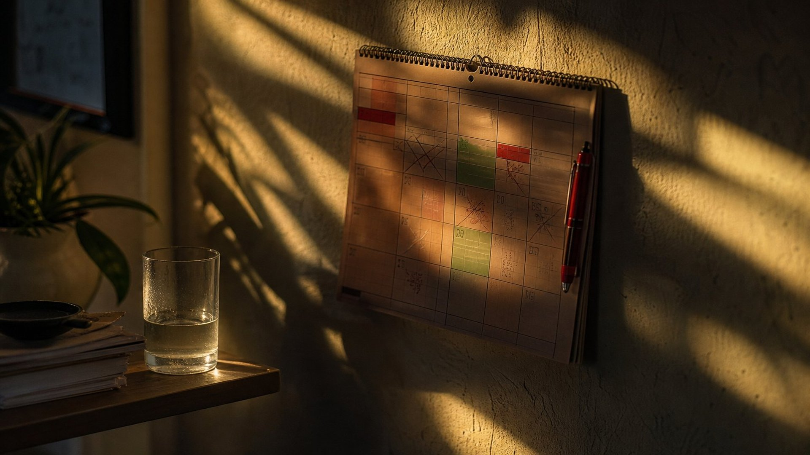
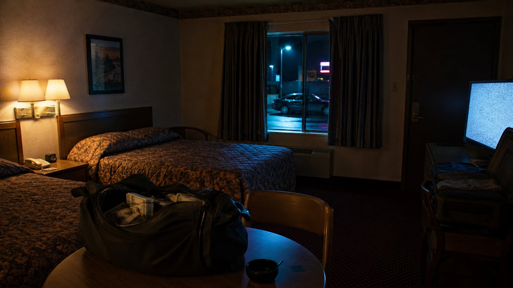
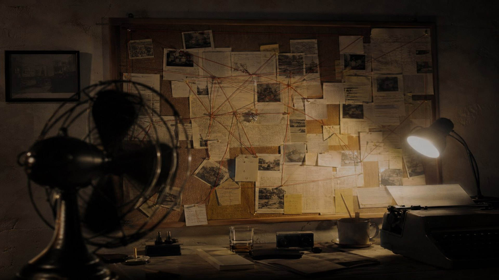
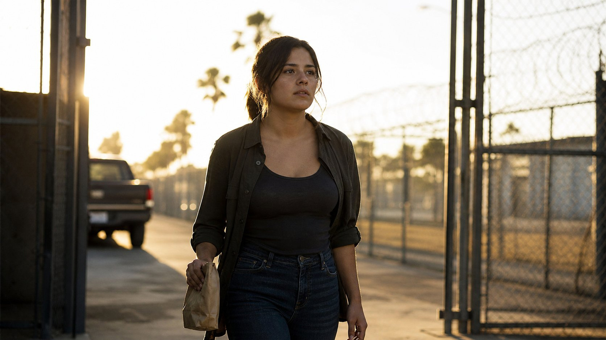

Ce qui est officiel, ce qui vient de la presse post-embargo et ce qui reste protégé : synopsis Rockstar, duo Jason / Lucia, structure en cinq chapitres et 93 missions documentées. Chaque bloc porte son badge et son identifiant de fait, pour ne jamais mélanger rumeur et confirmation.
Rockstar résume l'intrigue en un paragraphe : après un coup qui tourne mal, Jason et Lucia se retrouvent pris dans un complot criminel à l'échelle de tout l'État de Leonida, obligés de compter l'un sur l'autre.
Le pitch, mot pour mot
« Après un coup qui tourne mal, Jason et Lucia se retrouvent au cœur d'un complot criminel qui traverse tout l'État de Leonida, et doivent compter l'un sur l'autre plus que jamais. » CHA-01
Source primaire : page officielle VI et fiche Rockstar Store FR.
Aucun nom d'antagoniste, aucun twist de fin n'y figure.
Le point de départ
Lucia sort du pénitencier de Leonida ; Jason travaille pour des trafiquants des Keys. Leur rencontre est le déclencheur dramatique officiellement décrit. CHA-19CHA-23
La romance est optionnelle : partenariat criminel viable jusqu'au générique.
Le duo est présenté comme « Bonnie and Clyde » moderne par Rockstar.
Règle éditoriale. Toute phrase de cette page qui ne porte pas le badge OFFICIEL est soit un relevé de presse daté du 18/11/2026, soit une hypothèse communautaire. Aucune ligne de scénario non sourcée n'est présentée comme un fait.
PRESSE · 18/11
Les cinq chapitres
La campagne se lit en cinq chapitres titrés, pour un total de 93 missions principales relevées dans l'onglet Story recap du jeu. Les titres de chapitre ne sont pas des révélations d'intrigue ; les noms de missions sensibles sont masqués.
Répartition des missions par chapitre — source : TalkEsport et Press Start, 18/11/2026
Chapitre
Titre
Missions
Fonction narrative
Chapitre 1
Just Like Paradise
22
Prologue, Keys, rencontre du duo
Chapitre 2
Paradise Lost
13
Installation, premiers coups, bascule
Chapitre 3
Tits Ass Drug Money
26
Arrivée à Vice City, deux braquages majeurs
Chapitre 4
Vice City, Baby
25
Escalade, entourage, conséquences
Chapitre 5
Top of the World, Ma
7
Dernière ligne droite, 7 missions
Pourquoi 93 et pas 91 ? Plusieurs listes précoces omettaient deux missions du chapitre 2 — Thrillbillies et Twist Wrist, Smash, Grab. Le décompte retenu est 93. L'ordre affiché est celui du recap : la structure ouverte du jeu autorise un ordre d'exécution différent. HST-01HST-03HST-05

Illustration originale générée par IA (JPG, non officielle) : la planification telle que le genre la met en scène, pas une capture du jeu. Source des faits : TalkEsport et Press Start, 18/11/2026.

Les rendez-vous ne se donnent pas dans un bureau : ils se donnent sur le gravier, au crépuscule. ILLUSTRATION IA
Cinq chapitres, zéro rejouabilité : la seule règle à connaître
Le point le plus important pour un joueur qui commence ce soir n'est pas une astuce : il n'existe pas de menu de rejouabilité de mission. Une mission optionnelle laissée de côté peut devenir inaccessible, et une sauvegarde automatique écrase la transition de chapitre. MIS-42
Structure rapportée par les guides de lancement (non officielle)
Chapitre
Ce qu'il ouvre
À ne pas manquer
1
Leonida Keys et Port Gellhorn, premières planques, application bancaire
Les deux courses de Shirley et une méditation à la maison de Jason : elles disparaissent à la fin du chapitre
2
Première sortie en duo, activités de quartier
Les quêtes de connaissances qui ne répondent qu'après plusieurs jours de jeu
3
Vice City, braquages de banque possibles (billets marqués neutralisés)
Le déblocage des contrats de véhicules haut de gamme
4
Braquages de coffres de banque, contenus les plus rentables
Les invitations personnelles : elles arrivent par message, pas par icône
5
Fin de l'histoire
Rien n'est perdu : la plupart des quêtes restent accessibles en monde libre
La discipline qui sauve une partie — une sauvegarde manuelle au début et à la fin de chaque chapitre. Les guides du jour parlent de quinze emplacements ; le chiffre exact n'est pas confirmé, mais le principe l'est : l'autosave ne pardonne pas.
Deux nuances importantes : les quêtes marquées comme manquables ne comptent ni pour les trophées ni pour la complétion à 100 %, et les noms de missions qui circulent viennent de bases de données communautaires, pas de Rockstar. Traitez cette table comme une carte de prudence, pas comme un texte officiel.

Cinq chapitres, une seule sauvegarde automatique : le calendrier compte plus que la montre. Illustration originale générée par IA (JPG, non officielle). ILLUSTRATION IA

Le motel du début : le premier décor, et le premier argent qui compte. Illustration originale générée par IA (JPG, non officielle). ILLUSTRATION IA
PRESSE · 18/11
Chronologie de la production, en six dates
Comprendre quand chaque information a été publiée permet de savoir ce qui a pu changer depuis. Voici les six dates qui structurent tout le reste — et ce qu'elles ont réellement apporté.
Les six moments qui comptent
Date
Événement
Ce que ça a apporté
Déc. 2023
Premier trailer
Vice City, Jason et Lucia, ton général — et une date alors annoncée pour 2025.
2025
Report au 19 novembre 2026
La date finale, annoncée par Rockstar puis tenue.
24 juin 2026
Précommandes ouvertes
Prix, éditions, et la formule « a single player experience ».
Août 2026
Extended Look et présentations presse
Braquages, identification, garages, planques, écoute à pied.
8 oct. 2026
Rubrique musicale officielle
Six stations nommées, 18 titres, podcasts, écoute à pied.
18 nov. 2026
Fin d'embargo et ouverture néo-zélandaise
Notes (Metacritic 99), mesures Digital Foundry, premiers relevés de stations.
Pourquoi cette page insiste sur les dates — une information de 2023 n'a pas le même poids qu'une information d'octobre 2026. Chaque fait de ce guide porte son identifiant et sa source : la chronologie sert à juger la fraîcheur, pas à raconter l'histoire du studio.

Trois ans d'annonces, six dates qui tiennent. Illustration originale générée par IA (JPG, non officielle). ILLUSTRATION IA
OFFICIEL
Jason et Lucia : ce que Rockstar écrit
Les biographies officielles publiées sur la page « Only in Leonida » tiennent en quelques phrases, et ce sont les seules formulations que ce guide présente comme officielles.
OFFICIEL
Jason Duval
« Jason veut une vie facile, mais les choses ne font que devenir plus difficiles. » Il a grandi entouré d'escrocs et de criminels, a tenté de s'en sortir par l'Army, puis est revenu aux Keys travailler pour les trafiquants locaux. CHA-18
Réplique publiée : « If anything happens, I'm right behind you. » CHA-22
Sa rencontre avec Lucia est présentée comme pouvant être la meilleure ou la pire chose de sa vie. CHA-23
OFFICIEL
Lucia Caminos
« Le père de Lucia lui a appris à se battre dès qu'elle a su marcher. » La vie ne l'a pas épargnée ; défendre sa famille l'a menée au pénitencier de Leonida, la chance l'en a sortie. CHA-19
Elle veut la belle vie dont sa mère rêvait depuis Liberty City. CHA-20
Réplique publiée : « The only thing that matters is who you know and what you got. » CHA-22

Illustration originale (non officielle). Le fait qu'elle sorte du pénitencier en début de jeu, lui, est officiel : CHA-19, source Rockstar.
Ce qu'on ne présente pas comme officiel : les capacités spéciales attribuées à Jason (Combat Focus, Deadeye) et à Lucia (tir de précision au ralenti) circulent dans les guides mais ne sont pas confirmées par Rockstar — badge ESTIMATION, identifiants CHA-24. Les comédiens (Dylan Rourke, Manni L. Perez) sont rapportés, pas officialisés : CHA-25.
PRESSE · 18/11
Tonalité, inspirations et mise en scène
Les critiques convergent sur une mise en scène plus proche du film de braquage que du pastiche : les heists majeurs sont décrits comme des séquences de film de Michael Mann, et la durée de la campagne varie fortement selon les rédactions.
Durée
GameSpot annonce au moins 65 h pour la campagne et 200 h et plus pour le 100 % ; Press Start a bouclé l'histoire en un peu moins de 50 h ; TrueAchievements situe la fourchette à 50–80 h. HST-06
Mise en scène
Les braquages sont comparés à des séquences de film de Michael Mann ; le duo est construit sur une dynamique de couple criminel où la confiance devient une ressource de gameplay. MIS-01
Structure ouverte
L'ordre du recap n'est pas un ordre imposé : le jeu laisse plusieurs missions disponibles en parallèle, ce qui change la planification d'une première partie. HST-05
EN ATTENTE · 19/11
Ce qui reste inconnu au 18/11
Ces points ne sont pas des trous de rédaction : ce sont des informations qui n'existent pas encore publiquement, ou qui n'existent que sous forme d'hypothèse.
HST-08Nom de la dernière mission du chapitre 4 et de la mission finale : masqués par la presse, aucune fin validée par Rockstar.
HST-08Fins multiples : hypothèse communautaire, jamais confirmée. ESTIMATION
CHA-24Capacités spéciales distinctes par protagoniste : décrites par des guides, non confirmées. ESTIMATION
CHA-26Âge, nationalité et motif exact de l'incarcération de Lucia : non communiqués (fait officiel = absence d'information).
MIS-03Walkthrough officiel mission par mission avec récompenses : non publié par Rockstar ; le guide s'appuie sur la presse et signale chaque incertitude.
Missions dont le nom est masqué
Chapitre 1, position 18 : nom retiré de toutes les listes consultées.
Chapitre 4, position 25 : dernier nom du chapitre, retiré.
Chapitre 5, position 7 : mission finale, retirée.
Ces trois emplacements sont documentés dans la page Missions, derrière le même mécanisme de révélation volontaire. HST-08
Pages liées
Le groupe G1 couvre l'histoire : la page Synopsis approfondit les biographies et la page Missions déroule les cinq chapitres mission par mission.